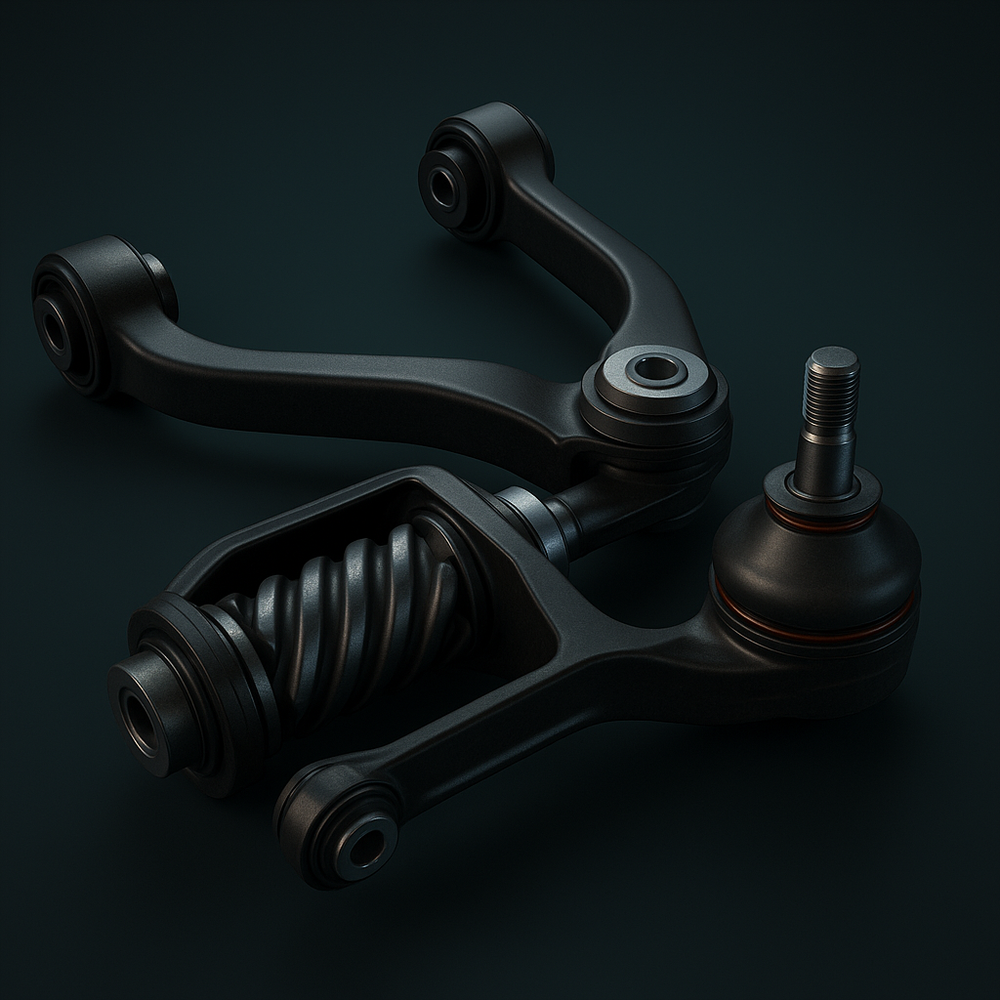

Suspension System
The suspension keeps your car stable, smooth, and controllable — even when the road isn’t. It’s the system that connects your wheels to the frame and absorbs shocks from bumps, potholes, and corners. Without a good suspension, your ride would bounce like a shopping cart — and you’d lose traction every time you hit a turn or a bump.
Springs & Shocks (Struts)

Springs hold up the weight of the car and absorb big bumps. Shocks (or struts) control how fast the springs compress and expand — they stop your car from bouncing nonstop. Together, they keep your tires touching the ground for grip and comfort. Upgraded coilovers or performance shocks can make your car corner flatter and handle tighter — but the ride gets stiffer.
Control Arms
These connect the wheels to the car’s frame. They let the wheels move up and down smoothly while keeping them aligned and stable. Think of them as the suspension’s “arms” that hold your wheels steady while driving. If control arms wear out, you’ll feel loose steering or hear clunks on bumps.
Sway Bars (Anti-Roll Bars)

Sway bars link the left and right sides of your suspension. When you turn, they reduce body roll — keeping the car flatter and more stable in corners. Without sway bars, your car would lean a lot in fast turns. Tuners often upgrade sway bars to make handling tighter and more responsive in corners.